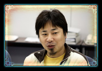
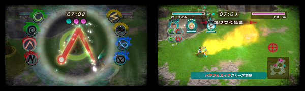
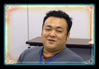

| ―― | まず、この『タクトオブマジック』の制作が始まったきっかけからお聞かせください。 | |
| 井上： | 2006年に、私の上司が任天堂さんと「一緒に新しい取り組みをしましょう」話を進めていたんです。その後「開発の機会が与えられた｣と自分がポンと肩を叩かれ、新作の概要をまとめた企画書作り、任天堂さんに見ていただきました。そこで「魔法のある世界観が画面上で表現できること」、「Wiiで魔法を楽しく発動させられること」というふたつの課題をクリアすることを条件に、試作品を作るチャンスをいただき作りはじめました。 |  |
| 伊豆野： | Wiiがちょうど立ち上がった時期で、幅広いジャンルでいろいろなWiiリモコンの使い方ができるゲームを揃えたかったこともあり、魔法を詠唱するというWiiリモコンの新しい使い方に可能性を感じました。 |
| 井上： | 2006年春から約半年、実験として制作して、製品版の開発に着手したのがその年の12月からなので、開発期間は２年以上ですね。 |
| 伊豆野： | ゲームの概要として、DSソフト『ロストマジック』がベースにあったので、リアルタイムストラテジー（以下：RTS）というジャンルの面白さは十分に理解していました。なので、あとはWiiリモコンで魔法詠唱をするという部分が楽しければ、この商品は成立するだろうと考えていました。 |
| 木村： | 魔法を使う爽快感は『タクトオブマジック』のキモでもあるので、調整にものすごく時間をかけましたし、出来上がりには満足しています。画面の端で描いても、はみ出ても、ものすごく小さく描いても認識するように調整しましたし、ユーザーの方には違和感なく直感的に操作できる感覚を味わってもらえると思います。 |
 |
| ―― | コンセプトは、やはり「魔法」を強くイメージされたんですね。 |
| 井上： | そうですね。魔法を題材にするので、方向性も「ファンタジーものの王道でいこう」と決まりました。 |
| ―― | ジャンルに「魔法アクションストラテジー」とありますが、具体的にどういった内容なのでしょうか。 |
| 井上： | RTSと呼ばれるジャンルは、リアルタイムでプレイヤーが集団を動かしたり、ユニットに攻撃や移動など個別の命令を与えていきながら領土を拡大するなど、ターン制のシミュレーションと違って、刻々と状況が変わっていくのが特徴です。 |
| 木村： | RTSは、俯瞰視点で自分が軍隊を動かしているという感覚が強いジャンルですが、「魔法アクションストラテジー」はWiiリモコンで操作することを考えると、軍隊を動かす感覚のほかに自分がその場に参加している感覚が強くでてくると思います。ゲーム中の主人公のように、突然魔法の杖（＝Wiiリモコン）を渡されて、戦いに赴く感覚が味わえると思います。 |  |
| 吉良： | 一般的なRTSよりも、アクション要素が強いゲームになっていると思いますので、ゲームジャンルの好き嫌い関係なく、純粋にアクションゲームとしても楽しめるんじゃないかと思います。 |